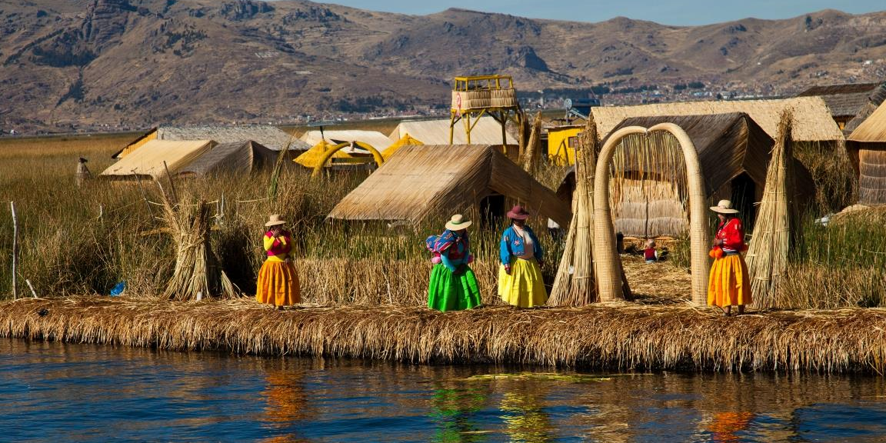
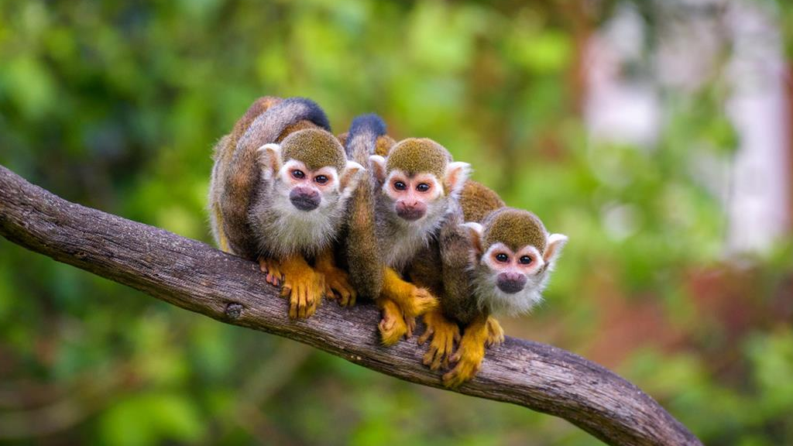

Poczuj energię Sacred Valley


Peru to mistyczna kraina, gdzie starożytne tajemnice Inków przenikają się z andyjską duchowością. Ośnieżone szczyty i tajmnicza dżungla Amazoni tworzą atmosferę magi zapierając dech w piersiach. To miejsce gdzie spotkasz szamanów i odkryjesz sekrety Machu Picchu. Kolorowe stroje ludów Keczua i Ajmara oraz tętniące życiem targi w Cusco i smaki kuchni Andyjskiej tworzą unikalną atmosferę. Peru to kraj, który przyciąga swoją autentycznością i mistyczną aurą.
Kiedy lecieć?
W Peru są dwie pory roku, od maja do października panuje zima, pora sucha, wyłączając Limę, gdzie przez większość czasu nad miatem wisi "Garua", czyli gęsta mgła. Od listopada do kwietnia w Peru panuje lato, ale jednocześnie i pora deszczowa, przez co wiele szlaków może być zamknięte. Na wybrzeżu przez cały rok jest sucho. W Andach porę deszczową najsilniej odczuwamy od stycznia do marca.
Peruwiańska kuchnia
Peruwiańska kuchnia jest badzo różnorodna. Najpopularniejszym i narodowym daniem Peru jest cerviche, kawałki świeżej ryby marynowane z sokiem z limonki z odrobiną czosnku. Zwykle podaje się z camote, jest to słodki ziemniak lub z cancha - ziarna kukurydzy. Być może szokującą informacją będzie to, że Peruwiańczycy delektują się mięsem ze świnki morskiej. Cuy jest drugim napopularniejszym źródłem mięsa w Andach, zaraz po alpakach.
Wyspy Uros

Budulcem pływających wysp Uros było Totoro. Usypane podłoże z grubej trzciny zamontowane kotwicami, wykonanymi z ciężkich drewnianych palów. Pływające wyspy istnieją do dziś przyciągając turystów chcących poznać Indiańskie zwyczaje podczas wizyty nad jeziorem Tititaca.
Amazońska Dżungla
Gęsty las deszczowy, krzyczące papugi i małpy, dzikie zwierzęta oraz wszechobecna zieleń. Wyprawa do amazońskiej dżungli to niesamowite przeżycie. Można uronić łezki wzruszenia spotykając małpki złodziejki, słysząc odgłosy różnych zwierząt i widząc miliony świecących oczu świecących podczas nocy.

Wydmy w Huacachina
Oaza Huacachina to miejsce które odwiedza każdy turysta. Jest to piękna oaza na pustyni i należy trzymać się mocno podczas dzikiej przejażdżki autem buggy o zachodzie słońca. Wydmy w Huacachina to potężne, piaszczyste formacje sięgające kilkuset metrów wysokości, otaczające naturalną oazę w południowym Peru. Jest to popularny ośrodek sportów ekstremalnych, oferujący również sandboarding.